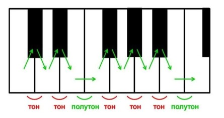
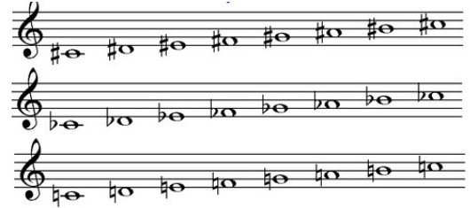

Урок 11. Тон. Полутон. Знаки альтерации.
Теория
В музыке тон — это расстояние между двумя соседними клавишами белого цвета, между которыми есть чёрная клавиша (например, между До и Ре).
- Полутон — это самое маленькое расстояние между двумя соседними звуками, например, между Ми и Фа или между Си и До.
- Знаки альтерации — это специальные знаки, которые изменяют высоту ноты:
- Диез (♯) — повышает ноту на полутон.
- Бемоль (♭) — понижает ноту на полутон.
- Бекар (♮) — отменяет действие диеза или бемоля.
Тон состоит из двух полутонов. Например, между До и Ре — тон, а между Ми и Фа — полутон.
Знаки альтерации пишутся перед нотой на нотном стане и действуют до конца такта.
Понимание тонов, полутонов и знаков альтерации важно для правильного исполнения мелодий и аккордов.
Упражнения
- Распознавание интервала: Определите, какой интервал между нотами — тон или полутон (Между До и Ре — тон; Между Ми и Фа — полутон; Между Си и До — полутон).
- Альтерация: Назовите ноты с альтерацией и пропойте их (Фа♯, Си♭, До, Ми♭, Соль♯).
Аудио-примеры
Примеры тонов и полутонов:
Визуальные примеры
Тоны и полутоны на клавиатуре:

Знаки альтерации на нотном стане:
